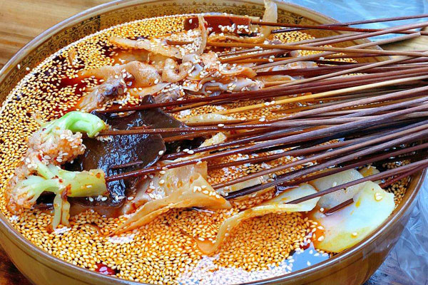
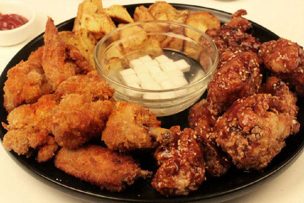
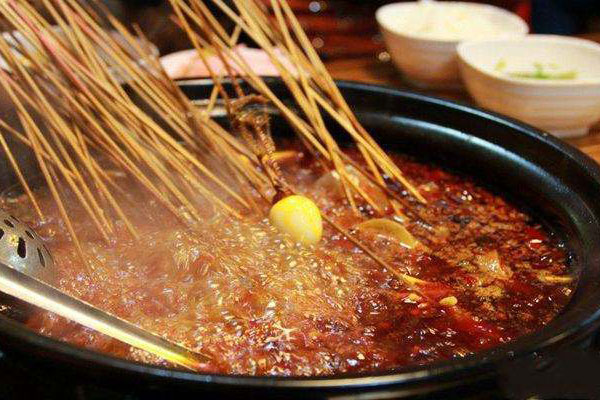
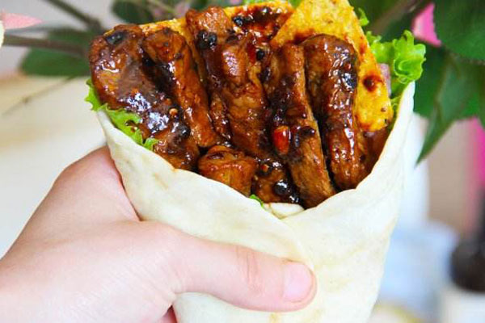
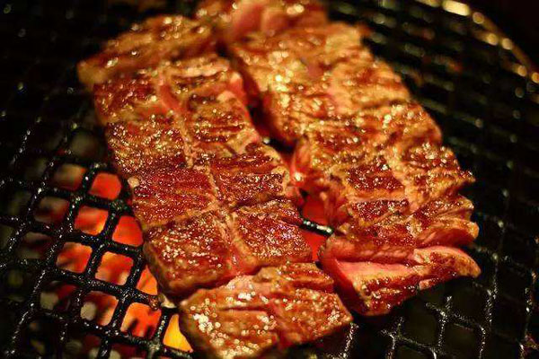
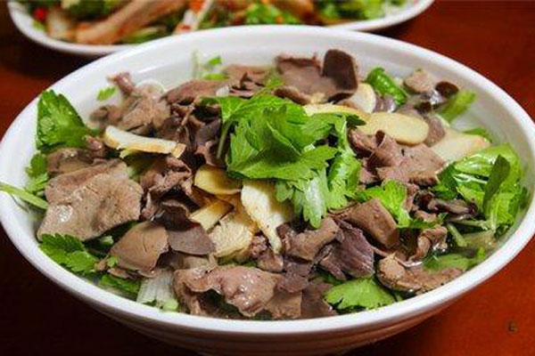
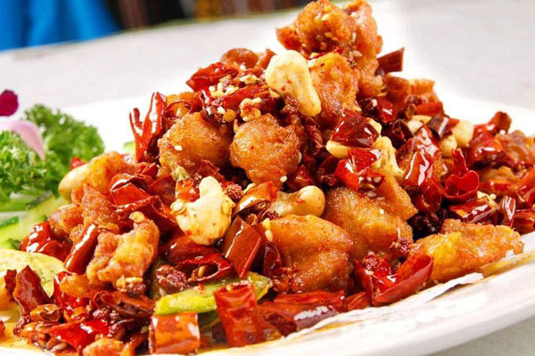

Party host 的独白：
最近好长时间以来，我时常有一种不真实的感觉：一个女孩子的暂时消失竟能让我心神不宁，在她那里我仿佛也很重要，我表达的渴望被需要的诉求也能被这个女孩温柔地回应。这是从未有过的事情。以至于这种不真实竟时时让我感到局促不安。
不过几乎不加思索就能够想到这种变化到原因吧：从某个偶然的网上相遇开始，我们之间的羁绊就不经意地越来越深。
时至此，和这个女孩（云）度过的时光对我来说是开心的。想了想我感到不安的原因莫不同于“人民日益增长的物质文化需要同落后的社会生产之间的矛盾”吧（doggy）。
好在时间对每个人都是不偏袒的，它给了我们每个人去成长的空间，让我们得以从幼稚到日臻成熟、总能从重重迷雾中寻得一丝亮光。本来一个人或许也能做到的事情，在两个人的情景中又有了一丝微妙而美的变化。
这样看来年龄的增长也蛮可喜的。有机会和这个女孩度过她的第一个生日我也由衷地高兴。嗯，这个女孩我一直称她为小李。所以我不负大家的期望来主持这个生日party!
好了，话不多说，下面就是给小李准备的show time!
首先当然是用小李最爱的食物来招待大家喽！
这个叫啥鸡？

不知道这个叫啥肉哦，反正看起来还蛮好次

串门，哦不，串串喽！

庖丁解啥？

不说了，直接上图，流口水ing！

认出这道菜了吗～

别说话，就是辣！

好了，大家吃饱喝足了对吗？作为我们今天的主人公，在边上流哈喇子（划掉）静静地瞅着我们吃完的小李表示，自己要在生日这天出去玩一玩才开心。大家有不同意见吗？（起哄）
Wait!看到那边的标语了吗？
大家让让，都听我用假调调起个头啊：
不是让你们跟着唱吗？怎么就我的声音出来了？？唉呀不好意思
今天我们为小李举办的云上庆生就到了尾声，相信大家都过得很开心，我们的小李表示自己感动和惊喜哭了，那等我们来年再聚啊。背景音乐，上来！（《难忘今宵》的歌声徐徐散播开来，大家沉浸在回味的气氛中。。。
这是来自host的祝福，biu~，晚安